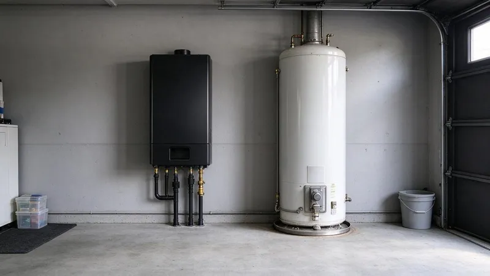

Tankless vs. Tank Water Heaters: What Works Best in Texas
When it comes to water heaters, Texas homeowners have two main options: traditional tank units and modern tankless systems. Both have their advantages and disadvantages, especially when considering our unique climate, water conditions, and home styles across the great state of Texas. At DFJ Plumbing, we've installed, repaired, and serviced countless units of both types. Let's break down what works best here in the Lone Star State.
The Traditional Tank Water Heater: A Texas Staple
For decades, the tank water heater has been the standard in Texas homes. These units store and heat a large volume of water, typically 40 to 80 gallons, ready for use. They are generally less expensive to purchase and install upfront. Most Texas homes, particularly those built before the 2000s, were designed with a dedicated space for a tank water heater, often in a garage, utility closet, or attic. Their simplicity in operation means fewer complex components, which can sometimes lead to easier and less costly repairs.
However, tank water heaters are less energy efficient because they continuously heat water, even when you're not using it. This standby heat loss can add up on your energy bill, especially during our long, hot Texas summers when you might not need as much hot water. They also have a finite supply of hot water. If you have a large family or frequently run multiple hot water appliances simultaneously, you might run out of hot water, leading to cold showers. The lifespan of a typical tank water heater is around 10 to 15 years, and they are susceptible to sediment buildup, which is common with hard water found in many parts of Texas, like the Dallas-Fort Worth metroplex or areas around Austin.
Tankless Water Heaters: On-Demand Hot Water for Texas Homes
Tankless water heaters, also known as on-demand water heaters, only heat water as you need it. When you turn on a hot water tap, cold water travels through a heat exchanger in the unit, where a gas burner or electric element rapidly heats it. This means you get a continuous supply of hot water, which is a significant advantage for larger families or homes with high hot water demands. There’s no tank to fill, so you never run out of hot water.
The energy efficiency of tankless units is a major draw. Since they only operate when hot water is needed, they eliminate standby heat loss, potentially saving you money on utility bills. They also have a longer lifespan, often 20 years or more, and take up much less space, as they are typically mounted on a wall. This can free up valuable square footage in garages or utility closets, which is a real bonus in some of our older, smaller Texas homes.
The main drawbacks for tankless systems are the higher upfront cost and more complex installation. They often require upgrades to gas lines or electrical systems, and proper venting is crucial, especially for gas models. Texas homes with hard water will also need regular descaling maintenance to keep the unit running efficiently and extend its life. This involves flushing the system with a vinegar solution to remove mineral deposits.
Considerations for Texas Homeowners
- Water Hardness: Many regions in Texas, from Houston to San Antonio, have hard water. Both tank and tankless heaters are affected by mineral buildup. Tankless units can be more sensitive and require annual descaling to maintain efficiency and warranty. Tank units will also accumulate sediment, leading to reduced efficiency and eventual failure.
- Energy Costs: Natural gas is often more affordable than electricity in many parts of Texas. If you have natural gas available, a gas tankless unit can be very efficient. Electric tankless units, while viable, often require substantial electrical service upgrades that can be costly.
- Space: Tankless units are compact and can be installed in tighter spaces, even outdoors in protected areas, which is a common practice in some mild Texas climates. Tank units require a dedicated closet or corner.
- Cold Weather Performance: While rare, Texas does experience freezes. Tankless units, especially those installed outside or in unheated garages, need proper freeze protection. Tank units, if located in an unheated space, are also vulnerable to freezing pipes if not adequately insulated.
- Maintenance: Regular maintenance is key for both. Tank units benefit from annual flushing to remove sediment. Tankless units need descaling, which is a more involved process.
When to Call a Professional
Choosing the right water heater for your home involves more than just picking a type. Factors like your home's hot water demand, existing plumbing and electrical infrastructure, and budget all play a role. An experienced plumber can assess your specific situation and recommend the best solution. If you're noticing rusty water, strange noises from your water heater, a leak, or simply aren't getting enough hot water, it's time to call in the experts.
At DFJ Plumbing, we specialize in water heater installation, repair, and maintenance across TX. Whether you're looking to upgrade to an energy-efficient tankless system or need a reliable replacement for your traditional tank unit, our skilled technicians are here to help. Don't hesitate to reach out for an assessment or service. Give us a call at (737) 405-5978 today.
Need a licensed plumber in Texas?
DFJ Plumbing answers 24/7 and offers same-day service across Texas.